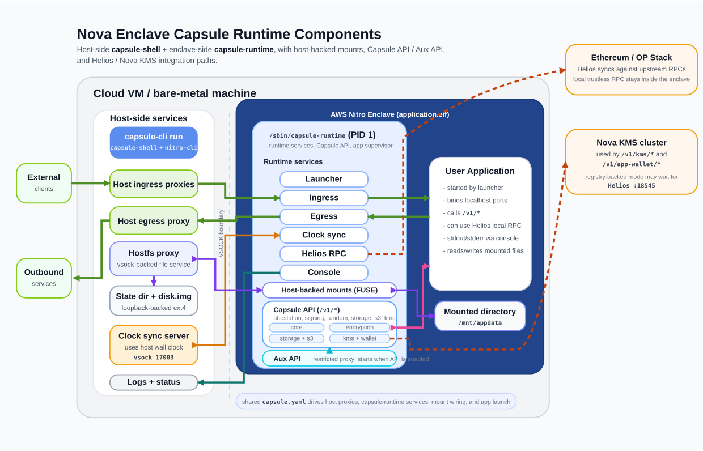

Capsule Developer Documentation
Turn Nitro Enclaves into a standard product workflow instead of a pile of operational chores.
Nova Enclave Capsule is a build and runtime toolkit for AWS Nitro Enclaves. It packages Docker images into enclave-ready artifacts and provides a unified runtime surface for networking, attestation, signing, encryption, storage mounts, log forwarding, and clock synchronization, so application teams can focus on business logic, product APIs, and iteration speed.
You bring a normal container image and a capsule.yaml file instead of hand-assembling Nitro startup and proxy scripts.
Your app consumes enclave-native capabilities over Capsule APIs on 127.0.0.1 rather than integrating the AWS NSM SDK directly.
Build, run, logs, mounts, time sync, ingress, and egress are folded into stable interfaces so teams can spend more time on product development.
Why Use Capsule
Capsule is valuable not just because it can launch enclaves, but because it turns enclave work from a one-off integration project into a repeatable, maintainable, product-oriented development path.
Without Capsule, teams usually end up handling
- Raw VSOCK and CID planning plus host-side forwarding
- Custom ingress and egress proxies with policy logic
- Low-level NSM, attestation, and signing integration
- Enclave logging, exit handling, and clock drift issues
- Host-backed mounts, loopback images, and file proxy plumbing
With Capsule, the workflow becomes
- ✓ Standard Docker images entering an enclave build flow
- ✓ A single
capsule.yamlfile declaring the runtime contract - ✓ Localhost APIs for enclave-native capabilities
- ✓ One CLI for build, run, packaging, and debugging
- ✓ More time spent on business services instead of runtime plumbing
It is easier to adopt
Capsule accepts a normal application plus a config file. You do not need to become a Nitro Enclaves expert before building your first enclave app.
It ships with more built-in functionality
Attestation, randomness, signing, encryption, S3, KMS, App Wallet, Helios RPC, and host-backed mounts can all be enabled as needed instead of rebuilt per project.
It frees teams from ops-heavy work
Capsule pushes shared Nitro runtime concerns into the platform layer so business code can focus on APIs, state, chain interaction, data flows, and user value.
In one sentence: Capsule lets you treat an enclave as an application runtime with special trust and security capabilities, not as a pile of infrastructure pieces you have to wire together yourself.
Developer Workflow
Capsule reduces the path from application code to enclave runtime into four stable steps. That simplification is one of the main reasons it improves developer velocity.
Start with a normal Docker application
Your service can still be a standard web app, API, or worker. If it runs in a container and listens on a known port, it can enter the Capsule flow.
Write capsule.yaml
Declare ingress ports, egress policy, Capsule API ports, mounts, KMS, S3, Helios, and other runtime requirements in one manifest.
Run capsule-cli build
The CLI reads the manifest, injects capsule-runtime into the app image, builds the EIF, and packages a runnable release image on top of capsule-shell.
Run capsule-cli run
capsule-shell launches the Nitro Enclave and host-side helpers, while capsule-runtime starts inside the enclave as PID 1 and supervises your application.
Docker App
-> capsule.yaml
-> capsule-cli build
-> release image (contains application.eif + capsule-shell)
-> capsule-cli run
-> capsule-shell launches enclave on host
-> capsule-runtime starts inside enclave
-> your app uses Capsule APIs on 127.0.0.1Core Modules
The best way to understand Capsule is not to memorize commands, but to understand what each module owns and which layer your application should actually interact with.

The architecture diagram in this repository shows the relationships between the host container, Capsule Shell, the enclave, Capsule Runtime, and the main integrations.
Capsule CLI
The developer entry point. It reads the manifest, builds the EIF, produces the release image, and helps you launch the runtime during development and deployment.
Capsule Shell
The host-side runtime wrapper around nitro-cli. It also owns host-side proxies, file proxy services, clock sync serving, and log forwarding.
Capsule Runtime
The PID 1 supervisor inside the enclave. It manages mounts, egress, clock sync, ingress, the Capsule API, optional Helios RPC, and the lifecycle of your application process.
Capsule API
A loopback-only /v1/* capability surface by default. Your app uses it over HTTP for attestation, randomness, signing, encryption, S3, KMS, and App Wallet features.
Aux API
A restricted proxy surface in front of the Capsule API. It is useful for attestation-facing paths or sidecars that should not receive the full capability set.
capsule.yaml
The contract file for the whole system. It is more than configuration: it defines which ports, policies, and platform features your app expects inside and outside the enclave.
Recommended application boundary: business logic should mostly talk to the Capsule API, normal file paths, and standard network ports. Avoid pushing VSOCK, Nitro CLI, or raw NSM details into application code.
Core Capabilities
These capabilities cover most of what enclave applications need in practice, and they are what make Capsule more than a tool that merely starts enclaves.
Standard image to EIF flow
Keep your usual Docker workflow and enter the enclave build path through capsule-cli build instead of maintaining a separate packaging pipeline.
Local secure capability surface
Consume enclave-native functionality directly through endpoints like /v1/eth/address, /v1/random, /v1/attestation, and /v1/encryption/*.
Ingress and egress control
Inbound traffic is proxied across host and enclave boundaries, while outbound traffic goes through a local HTTP(S) proxy with explicit allow and deny rules.
Host-backed mounts and S3
Mount host state into the enclave as normal file paths and optionally enable persistent storage through /v1/s3/*.
Signing, encryption, and KMS
Use built-in Ethereum signing, P-384 ECDH encryption, Nova KMS, and App Wallet flows without rebuilding those integrations in every application.
Logs, supervision, and clock sync
Capsule Runtime owns app supervision, log forwarding, and wall-clock management so the runtime behaves more predictably in production.
Outbound access is an explicit constraint
Enclaves do not have direct internet access. Your HTTP client must honor HTTP_PROXY and HTTPS_PROXY, or be configured explicitly to use the local proxy.
The primary API is usually local only
The full Capsule API typically binds only to 127.0.0.1. If you need an external attestation path, expose the restricted Aux API instead of the primary API.
IN_ENCLAVE is not injected automatically
If your application wants to branch on IN_ENCLAVE, define that convention yourself in your Dockerfile or startup wrapper.
A Minimal Developer Example
If you want to get a minimal Capsule app running from scratch, you usually only need one manifest, a little business logic, and two CLI commands.
version: "v1"
name: "hello-capsule"
target: "hello-capsule:enclave"
sources:
app: "hello-capsule:latest"
defaults:
cpu_count: 2
memory_mb: 4096
ingress:
- listen_port: 8000
egress:
allow:
- "api.openai.com"
- "169.254.169.254"
api:
listen_port: 18000
aux_api:
listen_port: 1800118000 or 18001 through ingress.const capsuleBase = "http://127.0.0.1:18000";
export async function loadCapsuleContext() {
const [identity, entropy] = await Promise.all([
fetch(`${capsuleBase}/v1/eth/address`).then((r) => r.json()),
fetch(`${capsuleBase}/v1/random`).then((r) => r.json()),
]);
return {
enclaveAddress: identity.address,
randomBytes: entropy.random_bytes,
};
}Build the application image first
Keep your existing Docker workflow, for example docker build -t hello-capsule:latest ..
Build the Capsule release image
Run capsule-cli build -f capsule.yaml to convert the app image into a package that can run inside Nitro Enclaves.
Start the enclave
Run sudo capsule-cli run -f capsule.yaml -p 8000:8000. Capsule will start both the host-side container and the enclave runtime path for you.
Verify your business endpoint and Capsule API usage
Call the app entrypoint from outside while your app calls 127.0.0.1:18000 internally, and confirm that your business logic and enclave-native capabilities are wired together correctly.
A practical reference point: the repository’s examples/hn-fetcher example shows the smallest useful path for adapting application code to Capsule’s egress proxy model.
How To Use Templates And Example Repositories
Capsule solves runtime and platform concerns. If you want to move quickly into actual product work, the best approach is to start from a template and then use example repositories as pattern references.
nova-app-template: the fastest way to bootstrap
This template already includes a realistic application skeleton: a FastAPI backend, a Next.js frontend, example contracts, and a capsule.yaml template that matches the broader Nova workflow. It also includes demo routes for KMS, App Wallet, S3, mounted directories, and encryption, so you can begin from an app-shaped project rather than a toy sample.
sparsity-nova-examples: look up patterns by capability
If you were referring to a general example repository as nova-app-examples, the current public repository is sparsity-nova-examples. It is best used as a pattern library for concrete problems such as minimal attestation flows, browser-to-enclave encrypted transport, persistent backends with Helios, and on-chain randomness or oracle workloads.
This repository’s docs: verify the actual runtime contract
Whenever you need the real Capsule behavior rather than an example-specific shortcut, come back to this repository’s docs and implementation for the authoritative contract around capsule.yaml, Capsule API behavior, port handling, runtime startup order, host-backed mounts, and the VSOCK model.
docs/capsule.yaml
Review the full configuration contract and field-level usage rules.
docs/capsule-runtime.md
Understand Capsule Runtime as the PID 1 supervisor inside the enclave.
docs/capsule-api.md
Inspect the actual /v1/* API contract and response formats.
docs/port_handling.md
Clarify how ingress, -p, and host/container/enclave port mapping fit together.
Recommended Adoption Path
If the goal is to ship a real enclave application quickly, this order tends to work much better than trying to assemble every low-level runtime piece yourself from day one.
Run the template end to end
Start with nova-app-template and understand the application shape, routes, frontend-backend interaction, and capsule.yaml configuration model first.
Trim it down to your business case
Keep the modules you need, such as attestation, S3, KMS, or App Wallet, and remove the example routes you do not need so the app returns to a clean product boundary.
Use examples for targeted patterns
When you hit specific problems like browser encryption, chain interaction, persistence, or oracle logic, use sparsity-nova-examples as a focused reference library.
Then harden the runtime contract
Converge your egress domains, mounts, KMS settings, Helios config, resource defaults, and published ports into a stable manifest and deployment contract.
A useful mindset: treat Capsule as a framework that adds trusted runtime capabilities to your application, not as a narrow tool that only launches enclaves. That framing leads to cleaner system design and a more durable developer workflow.